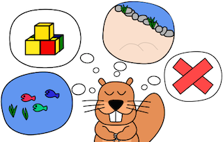
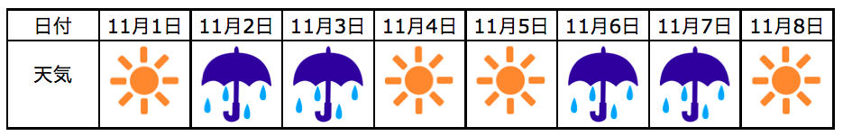

遊び場
ビ太郎は，その日と前の日の天気で遊ぶ場所を決めています。

今日が晴れで昨日が雨のときは，「川の中」で泳ぎます。
今日が晴れで昨日も晴れのときは，「川辺」で遊びます。
今日が雨で昨日が晴れのときは，「家の中」でつみ木を使って遊びます。
今日が雨で昨日も雨のときは，遊びません。
11月1日から11月８日の天気は次のようになっていました。

ビ太郎は，11月7日はどこで遊んだでしょうか？
解答
正解は「遊ばなかった」です。
ビ太郎は今日が雨で昨日も雨のときは遊びません。
今日（11月7日）は雨で昨日（11月6日）も雨でしたのでビ太郎は遊びませんでした。
解説
この問題は論理について考える問題です。
「雨か晴れか」ということは論理値として考えることができます。
今日が「雨か晴れか」と昨日が「雨か晴れか」ということは、2つの論理値の組み合わせで「昨日は晴れで今日も晴れ」「昨日は晴れで今日は雨」「昨日は雨で今日は晴れ」「昨日は雨で今日も雨」という4通りがあります。
「「昨日は雨」で「今日も雨」」のような2つの論理値が両方とも成り立つ論理式を論理積（AND条件）といいます。
コンピュータは「前の入力がTで次の入力がAのときは「た」に変換する」のように、論理値を利用したり論理積のような論理演算を数多く行いながら動作しています。